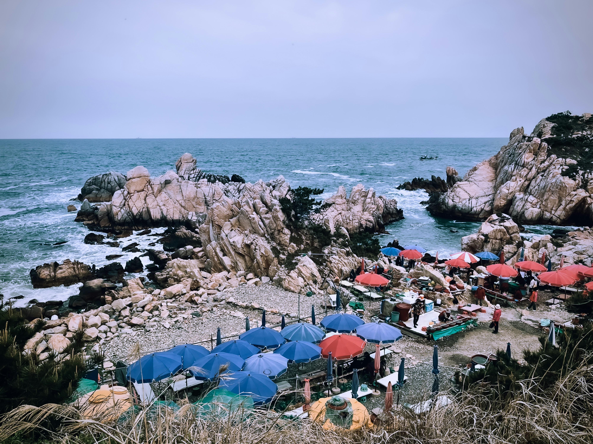

Ulsan Table
여행의 속을 채우는
매콤한 순두부찌개
부드러운 순두부와 얼큰한 국물이 어우러진 따뜻한 한 끼로 바닷바람을 맞은 여행의 피로를 달래보세요.
Ulsan · Korea
탁 트인 풍경과 도시의 활기가 조화를 이루는 울산에서 시원한 여행의 순간을 발견해 보세요.
Landmark Gallery
사진과 영상으로 울산의 여러 표정을 만나보세요.

Local Food
Ulsan Table
부드러운 순두부와 얼큰한 국물이 어우러진 따뜻한 한 끼로 바닷바람을 맞은 여행의 피로를 달래보세요.